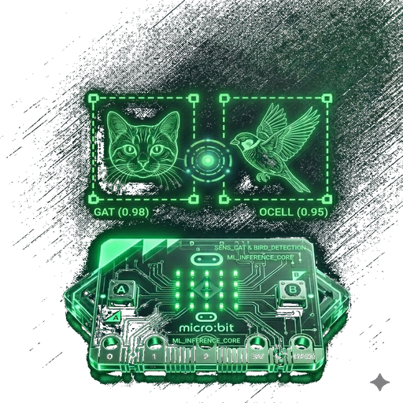

RobHort – El guardià del teu bancalAnimals a detectar
Model d'intel·ligència artificial
💡 Si no saps quin triar, usa Ràpid.
Llarga distància fa 5 anàlisis per frame: pot anar lent en mòbils antics.
Cada quants segons s'envien les dades a la micro:bit per Bluetooth.
RobHort – El guardià del teu bancal utilitza la càmera del mòbil per detectar animals en temps real i avisa la micro:bit per Bluetooth. Tot funciona al mateix dispositiu, sense enviar res a Internet.
Animals que detecta:
Missatge enviat a la micro:bit:
animal:percentatge separat per comesgat:87,ocell:450 una sola vegada.Models de detecció disponibles:
Consell: comença amb Ràpid. Si no detecta a la distància que necessites, prova Llarga distància.